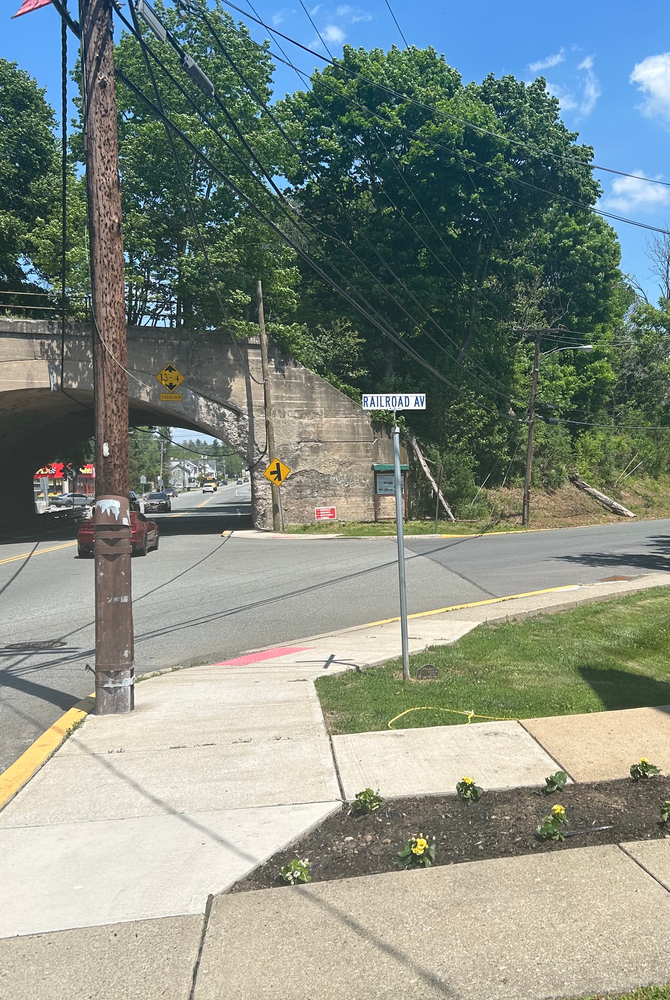
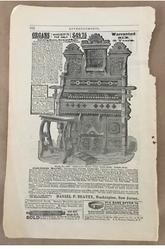
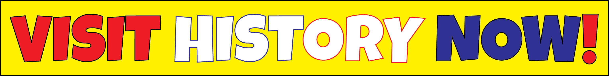
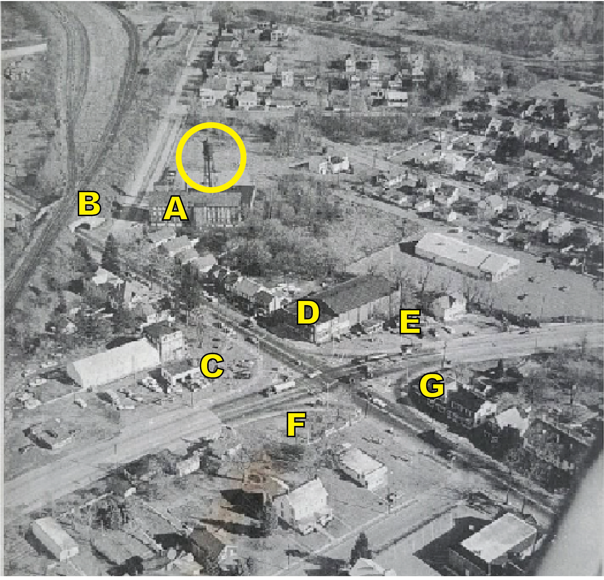
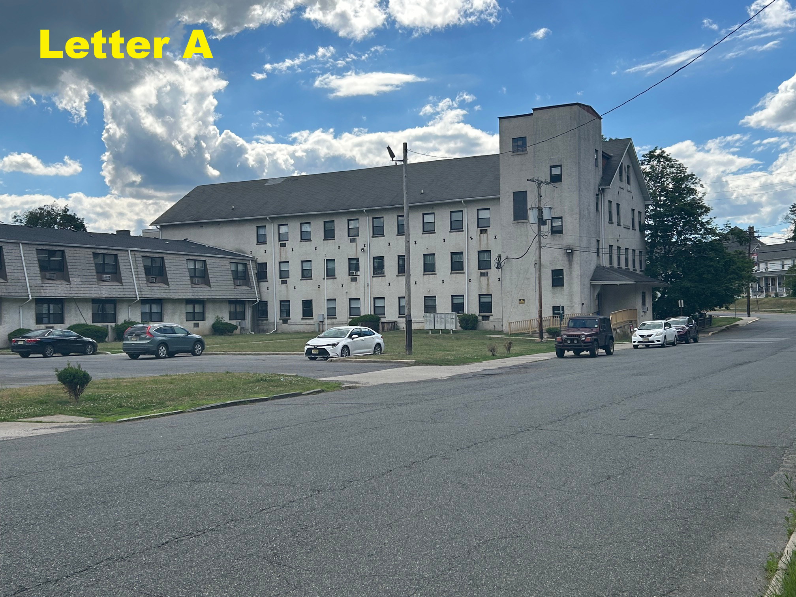
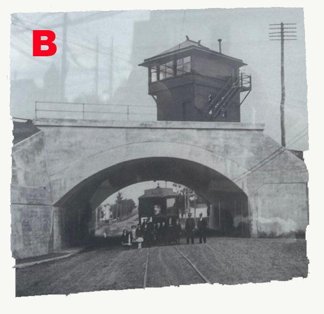
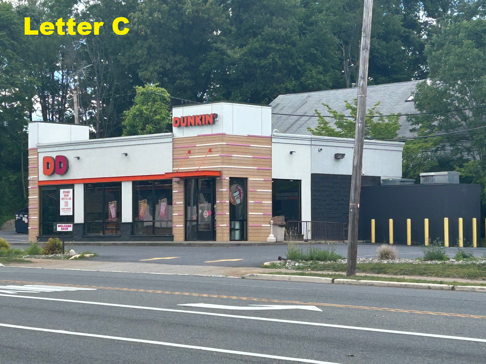
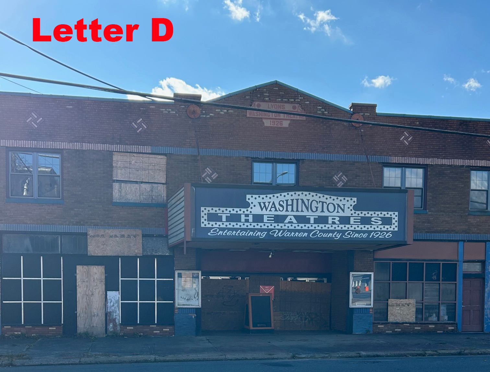
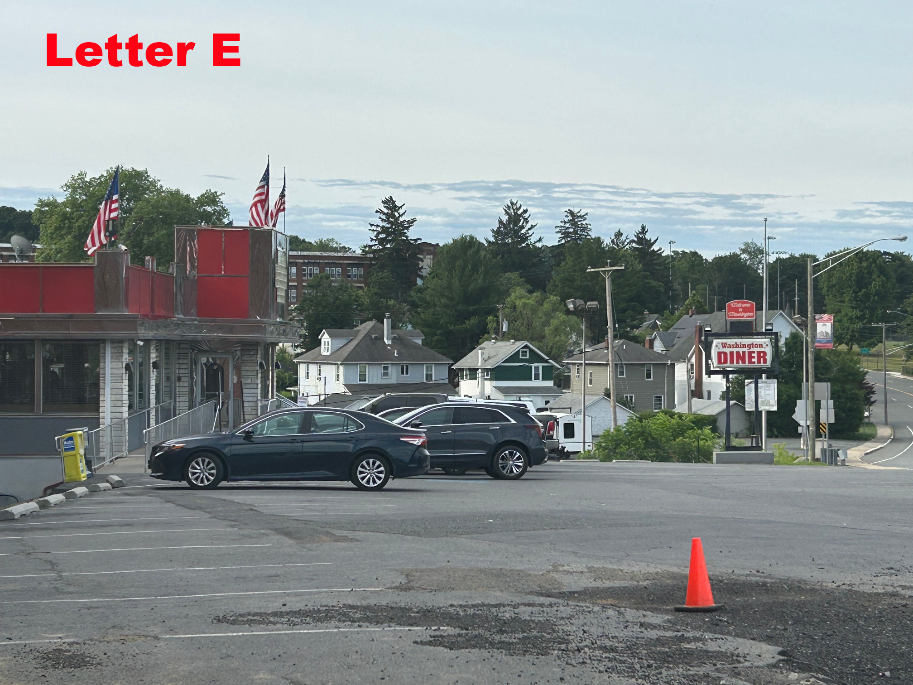
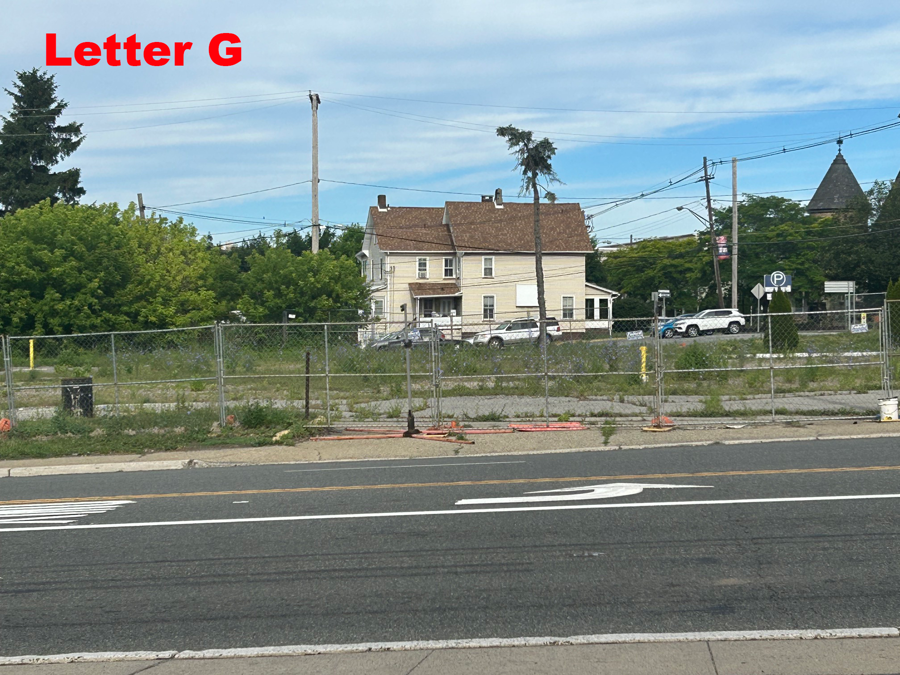

PAST AND NOW: Here is how Washington, NJ 07882 looked like from the very distant past. (Please see Black and White Map with Letters A-H below.) In time, some of these landmarks changed. Modern Businesses were born in these spaces. Unfortunately, other old landmarks here died from no activity since it stopped sheltering life. However, the buildings are still there, (Pictures D and F). The other picture next to it is what the same area looks like today during the Summer of 2026. History is cool!


THIS GOES TO LETTER A BELOW: In the 1880s, the area along Railroad Avenue in Washington, NJ, was heavily dominated by the sprawling Daniel F. Beatty Organ Factory. Daniel Beatty, (above), who served as the town's mayor, was a massive producer of pump organs, shipping them across the country. At that same time, early iterations of silk and textile mills also began operating along Railroad Avenue. Here is what made Railroad Avenue a major hub during the Gilded Age: The Beatty Organ Empire: Beatty's factory (nearby) transformed Washington into an industrial center. His highly publicized mail-order instruments generated so much mail that Washington briefly boasted the third-largest post office in the state of New Jersey, trailing only Newark and Jersey City. The Silk Mills: Alongside the organs, a prominent silk mill was established near the railroad tracks, manufacturing silk fabrics and later undergarments. (This copy here from internet or google.) SEE FOOTER BELOW ALSO...


THIS GOES TO LETTER B BELOW: This was a popular train stop back in those days as it loaded the train cars with many well made pianos and organs from a nearby factory in Washington, NJ. (It transported people too.) I learned these products really helped the town of Washington get on the map and prosper so it's cool to see today there is a footprint remaining of such an impressive time.


THIS GOES TO LETTER C BELOW: This falls under the category of Modern Advancements as everyone loves a good cup of coffee and a donut or two! This popular Dunkin' Donuts store is on the now corner of Rt. 57 and Rt. 31. Back in those days, it wasn't there (yet) as shown in the picture marked with a "C".

THIS GOES TO LETTER D BELOW: This movie house is located on the corner of Rt. 57 and Rt. 31 in beautiful Washington, NJ in Warren County. This landmark made a lot of popcorn 🍿 and laughter throughout its run! From yesterday to today, people walked the same Earth in front of this location. Now, the landscape changed over time but the fun memories still can be remembered! Wow, it opened in 1926!

THIS GOES TO LETTER E BELOW: Another one here under the category of Modern Advancements. This popular Washington Diner has been around for many years and has great food and service! It's across the street from Dunkin' Donuts and CVS. (on the now corner of Rt. 57 and Rt. 31) Back in those days, it wasn't there (yet) as shown in the picture marked with a "E".

THIS GOES TO LETTER F BELOW: Another one here under the category of Modern Advancements. This very convienent CVS has been around for many years now! It's across the street from Dunkin' Donuts. (on the corner of Rt. 57 and Rt. 31.) Back in those days, it wasn't there (yet) as shown in the picture marked with a "F".

THIS GOES TO LETTER G BELOW: I remember getting fuel for my car at this location back in the 1990's as it was a popular gas station in those days. I think it was a Mobil? Right behind that fence was that gas station then and it served the public for many good years. Unfortunately, today, its an open lot waiting for "life" again in the form of modern type business. It's across the street from the now Washington Diner. It's marked with the Letter "G" shown in the picture here.
